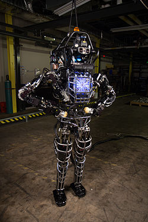

Unimate
The first industrial robot, invented by George Devol and produced by the world's first robotics company, Unimation.

Fictional

Bishop
Bishop was a groundbreaking synthetic person designed with unwavering ethical programming, dedicated to serving humanity through his advanced medical, technical, and analytical capabilities.
Atlas
Atlas was a humanoid robot developed by Boston Dynamics, known for its advanced agility and dynamic movements, including running and backflips, which are often featured in viral videos.

Fictional
Norbot
WABOT-1
The WABOT-1 was the first fun-scale anthropomorphic robot developed in the world.